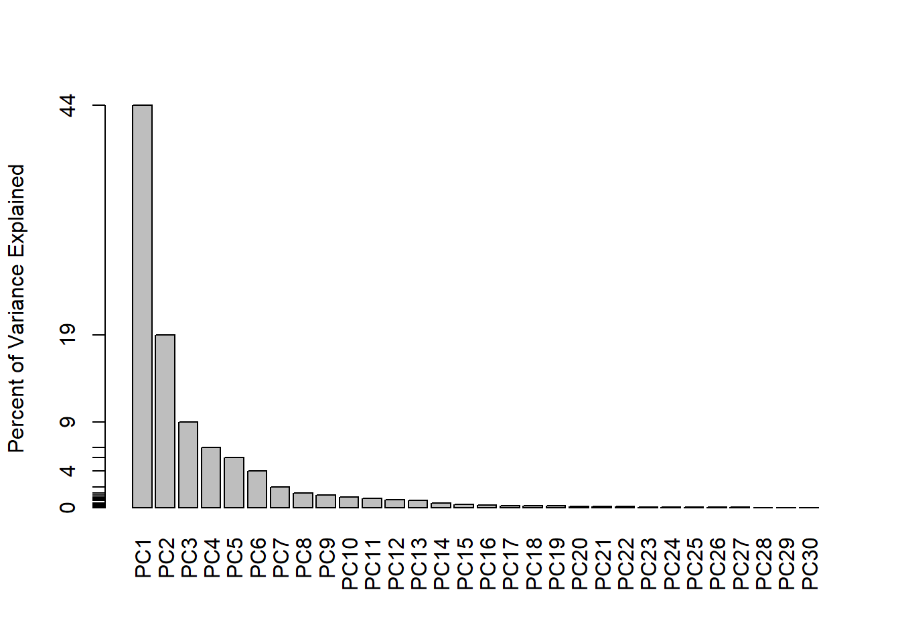
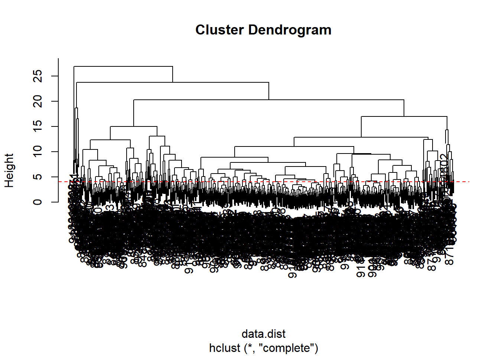
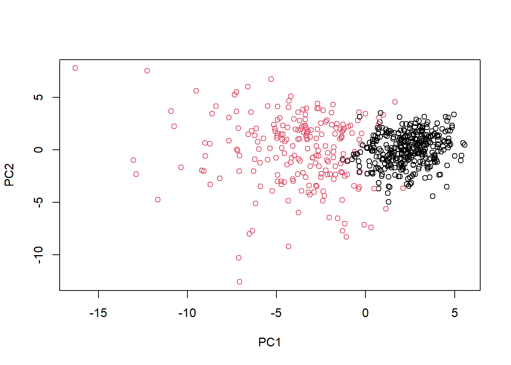

# We can use -1 here to remove the first columnwisc.data <- wisc.df[,-1]
# Create a diagnosis vector for laterdiagnosis <-as.factor(wisc.df$diagnosis)
# Q1. How many observations are in this dataset?num_observations <-nrow(wisc.data)cat("Number of observations:", num_observations, "\n")
Number of observations: 569
# Q2. How many of the observations have a malignant diagnosis?num_malignant <-sum(diagnosis =="M")cat("Number of observations with malignant diagnosis:", num_malignant, "\n")
Number of observations with malignant diagnosis: 212
# Q3. How many variables/features in the data are suffixed with _mean?mean_vars <-grep("_mean$", names(wisc.data))num_mean_vars <-length(mean_vars)cat("Number of variables/features suffixed with _mean:", num_mean_vars, "\n")
Number of variables/features suffixed with _mean: 10
Q1. How many observations are in this dataset?
569
Q2. How many of the observations have a malignant diagnosis?
212
Q3. How many variables/features in the data are suffixed with _mean?
10
# Check column means and standard deviationscolMeans(wisc.data)
Q4. From your results, what proportion of the original variance is captured by the first principal components (PC1)?
%44.27
Q5. How many principal components (PCs) are required to describe at least 70% of the original variance in the data?
3(PC1,2,3)—>%72.63
Q6. How many principal components (PCs) are required to describe at least 90% of the original variance in the data?
7(PC1-7)—> $91.01
biplot(wisc.pr)
# Scatter plot of PC1 vs PC2, colored by diagnosisplot(wisc.pr$x[,1], wisc.pr$x[,2], col = diagnosis, xlab ="PC1", ylab ="PC2")
Q7. What stands out to you about this plot? Is it easy or difficult to understand? Why?
Difficult. This bi-plot is difficult to understand because it appears cluttered and does not provide clear insights into the relationships between variables and observations.
# Scatter plot of PC1 vs PC3, colored by diagnosisplot(wisc.pr$x[,1], wisc.pr$x[,3], col = diagnosis, xlab ="PC1", ylab ="PC3")
Q8. Generate a similar plot for principal components 1 and 3. What do you notice about these plots?
In this plot, each point represents an observation, and the color indicates whether the diagnosis is malignant or benign. Comparing this plot to the previous one (PC1 vs PC2), we may notice a different pattern of separation between the two diagnosis categories along the PC1 and PC3 axes.
# Load the ggplot2 packagelibrary(ggplot2)# Create a data.frame for ggplotdf <-as.data.frame(wisc.pr$x)df$diagnosis <- diagnosis# Make a scatter plot colored by diagnosisggplot(df) +aes(PC1, PC2, col=diagnosis) +geom_point() +xlab("PC1") +ylab("PC2")
# Calculate variance of each componentpr.var <- wisc.pr$sdev^2head(pr.var)
# Calculate proportion of variance explained by each principal componentpve <- pr.var /sum(pr.var)# Plot variance explained for each principal componentplot(pve, xlab ="Principal Component", ylab ="Proportion of Variance Explained", ylim =c(0, 1), type ="o")
# Alternative scree plot with data-driven y-axisbarplot(pve, ylab ="Percent of Variance Explained",names.arg =paste0("PC", 1:length(pve)), las =2, axes =FALSE)axis(2, at = pve, labels =round(pve, 2) *100)

Q9. For the first principal component, what is the component of the loading vector (i.e. wisc.pr$rotation[,1]) for the feature concave.points_mean?
# Find the component of the loading vector for concave.points_meanloading_concave_points_mean <- wisc.pr$rotation["concave.points_mean", 1]loading_concave_points_mean
[1] -0.2608538
Q10. What is the minimum number of principal components required to explain 80% of the variance of the data?
# Calculate cumulative variance explainedcumulative_pve <-cumsum(pve)# Find the minimum number of principal components required to explain 80% of the variancemin_components_80 <-which(cumulative_pve >=0.8)[1]min_components_80
[1] 5
# Scale the wisc.data data using the "scale()" functiondata.scaled <-scale(wisc.data)
# Calculate the Euclidean distances between all pairs of observationsdata.dist <-dist(data.scaled)
# Create a hierarchical clustering model using complete linkagewisc.hclust <-hclust(data.dist, method ="complete")
# Plot the hierarchical clustering modelplot(wisc.hclust)# Add a horizontal line at height 4abline(h =4, col ="red", lty =2)

Q11. Using the plot() and abline() functions, what is the height at which the clustering model has 4 clusters?
This height corresponds to the number of clusters we specified 4 in this case.
# Cut the tree to have 4 clusterswisc.hclust.clusters <-cutree(wisc.hclust, k =4)
# Compare cluster membership to actual diagnosestable(wisc.hclust.clusters, diagnosis)
diagnosis
wisc.hclust.clusters B M
1 12 165
2 2 5
3 343 40
4 0 2
# Initialize a list to store the resultsresults <-list()# Iterate over different numbers of clustersfor (k in2:10) {# Cut the tree to have k clusters clusters <-cutree(wisc.hclust, k = k)# Store the cluster assignments results[[paste("Clusters:", k)]] <-table(clusters, diagnosis)}# Print the resultsfor (result in results) {print(result)}
Q12. Can you find a better cluster vs diagnoses match by cutting into a different number of clusters between 2 and 10?
Based on these results, it appears that cutting the dendrogram into 2 clusters provides the best separation between the diagnoses, with one cluster predominantly containing benign cells (B) and the other cluster predominantly containing malignant cells (M).
the “ward.D2” method is the favorite method for hierarchical clustering of the data.dist data set. It minimizes the variance within clusters, which is useful for identifying spherical clusters in the data. Additionally, the “ward.D2” method starts with all points in individual clusters and then merges them in a way that minimizes the total within-cluster variance, which can lead to more coherent and meaningful clusters.
# Using the minimum number of principal components required to describe at least 90% of the variability in the datanum_components <-which(cumsum(wisc.pr$sdev^2/sum(wisc.pr$sdev^2)) >=0.90)[1]num_components
[1] 7
# Create a hierarchical clustering model with PCA resultswisc.pr.hclust <-hclust(dist(wisc.pr$x[, 1:num_components]), method ="ward.D2")# Cluster the datagrps <-cutree(wisc.pr.hclust, k =2)table(grps)
grps
1 2
216 353
table(grps, diagnosis)
diagnosis
grps B M
1 28 188
2 329 24
plot(wisc.pr$x[,1:2], col=grps)
plot(wisc.pr$x[,1:2], col=diagnosis)
g <-as.factor(grps)levels(g)
[1] "1" "2"
g <-relevel(g,2)levels(g)
[1] "2" "1"
# Plot using our re-ordered factor plot(wisc.pr$x[,1:2], col=g)

# Use the distance along the first 7 PCs for clusteringwisc.pr.hclust <-hclust(dist(wisc.pr$x[, 1:7]), method="ward.D2")# Cut the hierarchical clustering model into 2 clusterswisc.pr.hclust.clusters <-cutree(wisc.pr.hclust, k=2)
# Compare the clustering results to the actual diagnosestable(wisc.pr.hclust.clusters, diagnosis)
diagnosis
wisc.pr.hclust.clusters B M
1 28 188
2 329 24
Q15. How well does the newly created model with four clusters separate out the two diagnoses?
This indicates that the clustering separates the two diagnoses reasonably well, with cluster 1 predominantly containing malignant samples and cluster 2 predominantly containing benign samples.
# Create k-means modelwisc.km <-kmeans(scale(wisc.data), centers=2, nstart=20)# Compare k-means clustering results with actual diagnosestable(wisc.km$cluster, diagnosis)
diagnosis
B M
1 343 37
2 14 175
# Compare k-means clustering results with actual diagnosestable(wisc.km$cluster, diagnosis)
diagnosis
B M
1 343 37
2 14 175
# Compare hierarchical clustering results with actual diagnosestable(wisc.hclust.clusters, diagnosis)
diagnosis
wisc.hclust.clusters B M
1 12 165
2 2 5
3 343 40
4 0 2
Q16. How well do the k-means and hierarchical clustering models you created in previous sections (i.e. before PCA) do in terms of separating the diagnoses? Again, use the table() function to compare the output of each model (wisc.km$cluster and wisc.hclust.clusters) with the vector containing the actual diagnoses.
Overall, neither the k-means nor the hierarchical clustering models before PCA appear to separate the diagnoses well, as there is mixing of benign and malignant samples across clusters.
Q17. Which of your analysis procedures resulted in a clustering model with the best specificity? How about sensitivity?
Based on these calculations, the k-means clustering model has the highest sensitivity (0.9029), while the hierarchical clustering model with PCA has the highest specificity (0.1302).
# Provide the correct path to the downloaded filefile_path <-"new_samples.csv"# Read the downloaded filenew <-read.csv(file_path)
# Project the new patient data onto the PCA spacenpc <-predict(wisc.pr, newdata = new)# Plot the PCA results with the new patient dataplot(wisc.pr$x[, 1:2], col = g)points(npc[, 1], npc[, 2], col ="blue", pch =16, cex =3)text(npc[, 1], npc[, 2], c(1, 2), col ="white")
Q18. Which of these new patients should we prioritize for follow up based on your result?
Patient “2” appears to be with the malignant cells, far from the cluster of blue points. Therefore, patient “2” is a good candidate for follow-up, as their characteristics are different from those of the other patients.